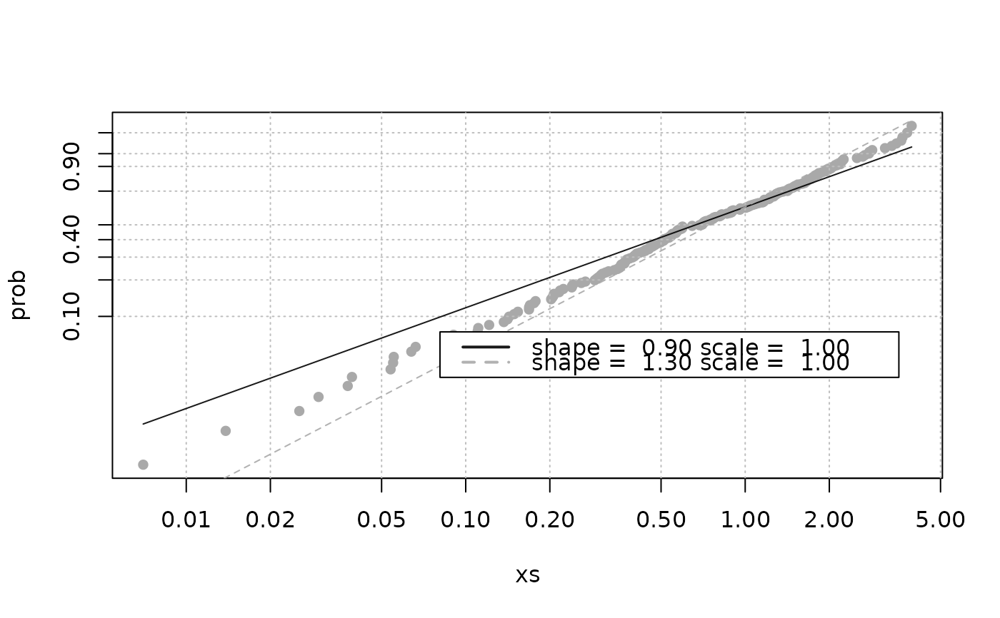
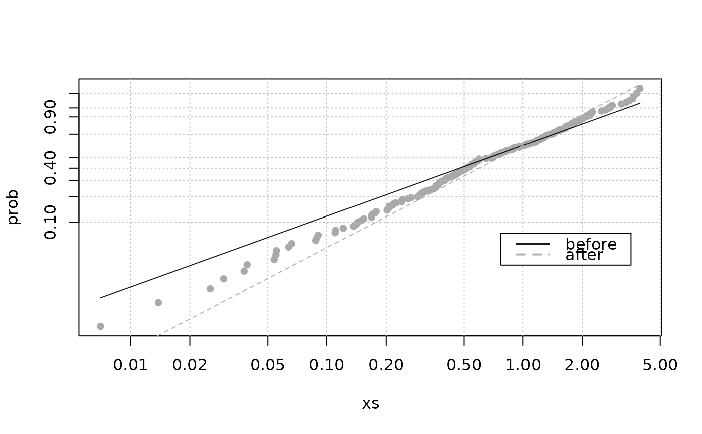

Classical Weibull distribution plot
weibplot.RdPlots a vector using Weibull distribution scales
Arguments
- x
The vector to be plotted.
- plot.pos
plotting position for points: either "exp" for expected ranks or "med" for a median rank approximation (see Details below).
- shape
Shape parameter for one or several Weibull lines to be plotted.
- scale
Scale parameter for one or several Weibull lines to be plotted.
- labels
Text to display in legend when Weibull lines are specified.
- mono
Monochrome graph.
- ...
Arguments to be passed to
plot.
Details
This plot shows \(\log\{-\log[1-F(x)]\}\) against
\(\log(x)\) where \(F(x)\) at point \(i\)
is taken as \(i/(n+1)\) if plot.pos is "exp", or as
the "median rank" approximation \((i-0.3)/(n+0.4)\)
if plot.pos is "med".
Note
The graph displayed uses a log scale for x. The log-log scale for y is
emulated via the construction of suitable graduations. So be careful when
adding graphical material (points, etc) to this graph with functions of
the "add to plot" family (points, lines, ...).
Examples
x <- rweibull(200, shape = 1.2, scale = 1)
weibplot(x, main = "Classical Weibull plot")
## Weibull lines
weibplot(x, shape = c(0.9, 1.3), scale = 1)

weibplot(x, shape = c(0.9, 1.3), scale = 1,
labels = c("before", "after"))

weibplot(x, shape = c(0.9, 1.3), scale = 1,
labels = c("before", "after"),
mono = TRUE)